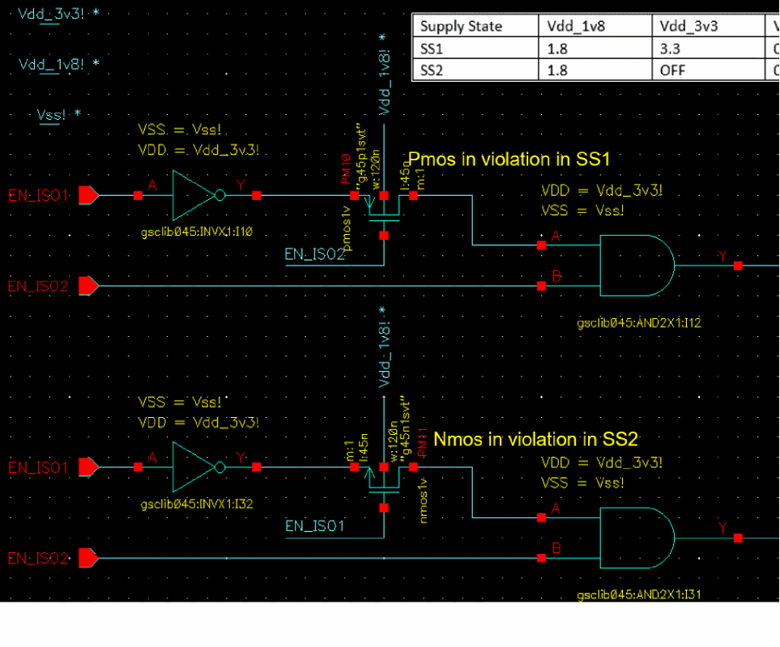

Bulk Checks
The incompatible bulk check flags transistors, which have the bulk terminal-related supply incompatible with the related supply of its source or drain terminal.
-
For a P-type transistor, a violation is reported in the following scenarios:
-
The voltage for the related bulk supply net is less than the voltage for the related source or drain supply net.
-
The bulk node is OFF compared to either the source or drain terminal that are fully ON in a particular supply state.
-
For an N-type transistor, a violation is reported in the following scenarios:
-
The voltage for the related bulk supply net is more than the voltage for the related source or drain supply net.
-
The bulk node is fully ON compared to the source or drain terminal that are OFF in a particular supply state.

Related Topics
Defining the Severity of Design Checks
Level Shifter Checks
Isolation Checks
Checking a Design in Foreground Mode
Checking a Design in Background Mode
Loading the Violations Database
Filtering Violations
Generating Signal Information
Return to top